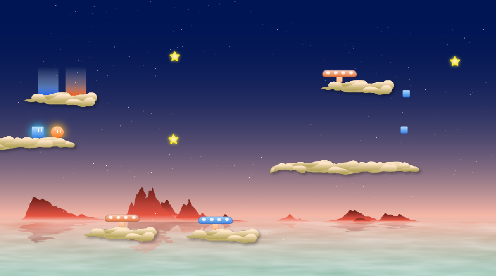
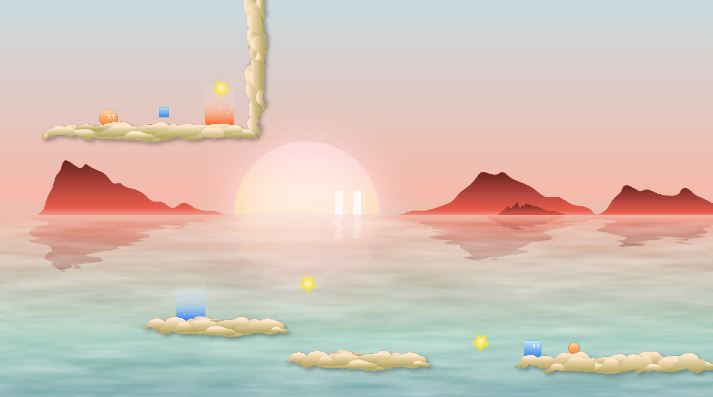
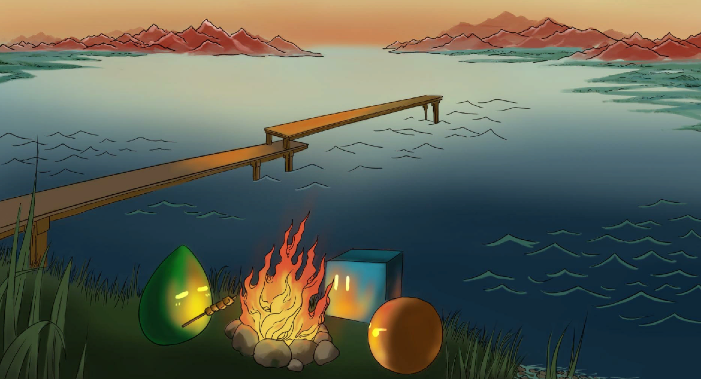

Ben Yang
About Me
My name is Ben Yang, currently a sophomore at Duke University majoring in Computer Science. I design games, web/mobile interfaces and other stuff.
Game Design - Suitchi
Suitchi is a 2D puzzle platformer game that I'm developing with two other Duke students using Unity. I design gameplay, levels and UI.
Download demo: Mac Windows
Download demo: Mac Windows



UI/UX Design - TechGuru
Tech-Guru.io is a computer benchmarking website that I co-founded and designed. It uses machine learning algorithms to analyze computer performance, and also recommends computers based on user's budget and need. As a startup project, we have passed the second round of the 2018 Duke Startup Challenge.


An introduction video of Tech-Guru.io that I've created with Adobe After Effects
Screenshots of Tech-Guru.io
UI/UX Design - Zhihu
During summer 2017, I worked as a Product Design Intern at Zhihu, a Chinese online Q&A community that serves tens of millions of users. I designed mobile and web interfaces for more than 15 projects, including a major update of iOS and Android home page.
3D & Animation - Mr.Green
Mr.Green is a short 3D animation that I've created with Maya.
Below are some renderings of 3D still life models that I've created with Maya.


Drawings
Below are some drawings that I've created.

Male Body, pencil on paper, 52 x 39 cm, 2017

Male Body, pencil on paper, A4, 2017 / Old Man, pencil on paper, 39 x 52 cm, 2017
Resume
You can view my resume here.